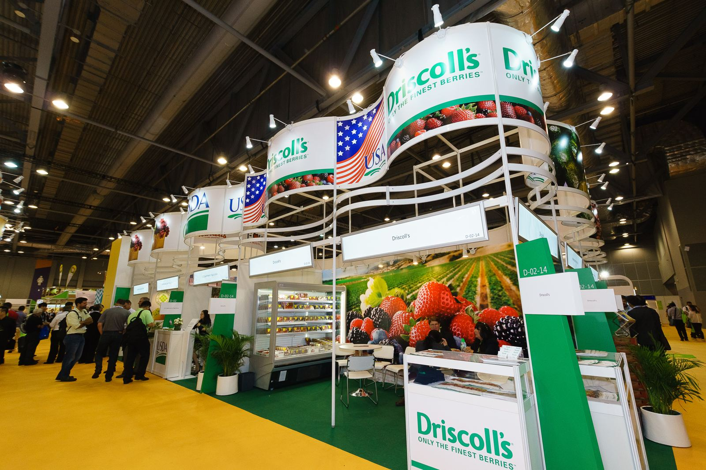

Expos · Expos
FRUIT LOGISTICA 2027
- Dates
- –
- Venue
- Messe Berlin, Messedamm 22, 14055 Berlin
- Location
- Berlin, Germany
- Format
- In-person
- Category
- Expos
- Industry
- Fresh produce trade fair
- Organiser
- Messe Berlin
- Official website
- https://www.fruitlogistica.com/en
About
Dates are local to the host city (Central European Time, UTC+1 / UTC+2 in summer).
Topics: fresh produce, food logistics, agriculture, food trade.
Sources
- Official — https://www.fruitlogistica.com/en